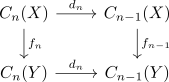

continuous function induces chain map
Proposition
Let $X,Y$ be topological spaces and $f: X \rightarrow Y$ a continuous map. Then the map induced by
\begin{align*}
f_n: C^{\mathrm{sing}_n}(X) \rightarrow& C^{\mathrm{sing}_n}(Y) \\
(g: \Delta_{\mathrm{Top}}^n \rightarrow X) \mapsto& (f \circ g: \Delta_{\mathrm{Top}}^n \rightarrow Y)
\end{align*}
on the abelian group of singular n-simplices is a chain morphism for

Proof
element chasing for an simplex $\sigma: \Delta^n_{\mathrm{Top}} \rightarrow X$ results in:
\begin{align*}
f_{n-1} \circ d_n(\delta) =& f_{n-1} \circ (\sum_{j=0}^{n} (-1)^{j} \cdot (\sigma \circ \partial_j) \\
=& \sum_{j=0}^{n} (-1)^{j} (f_{n-1} \circ \sigma \circ \partial_j ) \\
=& \sum_{j=0}^{n} (-1)^{j} (f_n \circ \sigma \circ \partial_j) \\
=& d_n \circ f_n(\sigma) \\
\end{align*}
\sum_{j=0}^{n} (-1)^{j} \cdot (f \circ \sigma_{n}^{(j)}) \in C_{n-1}(X)